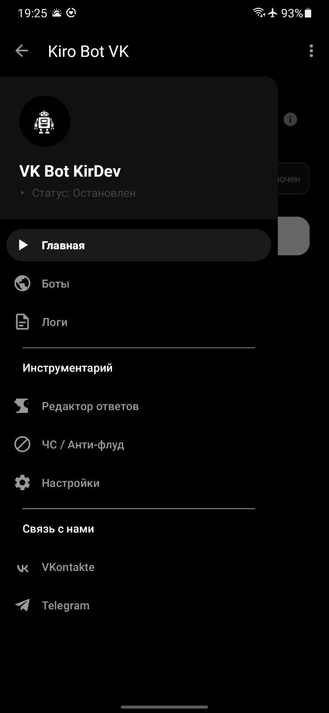
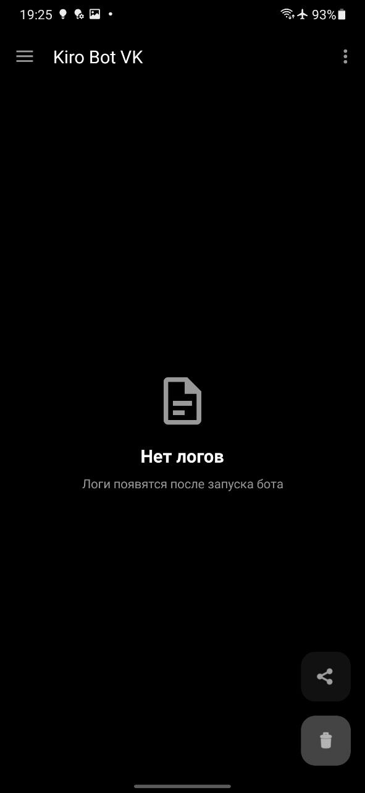
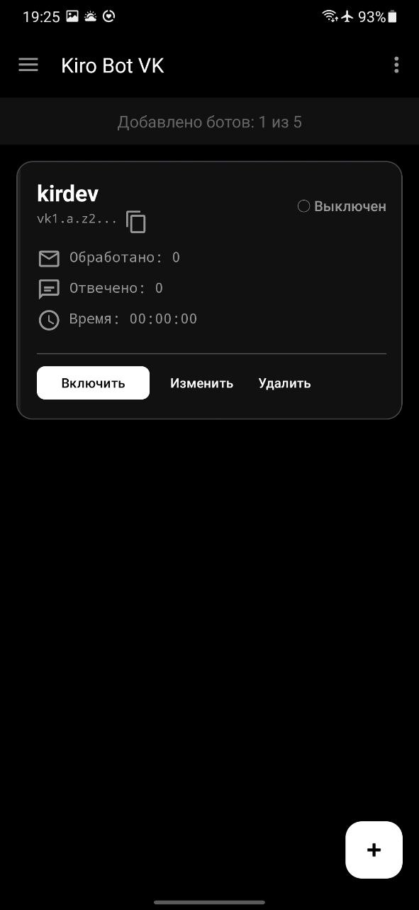
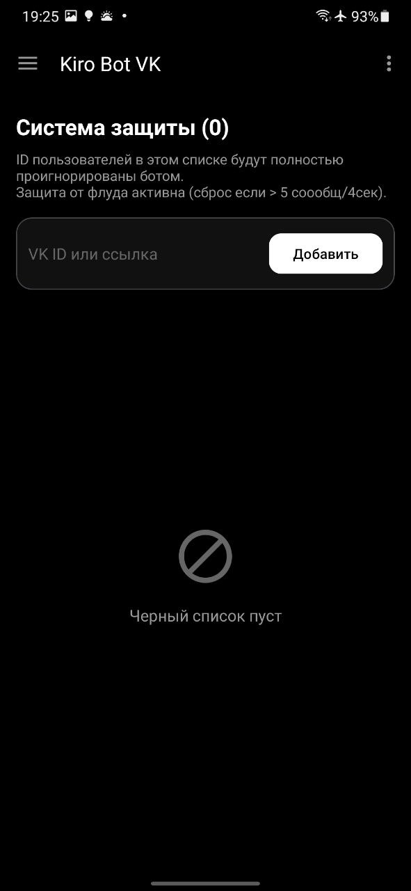
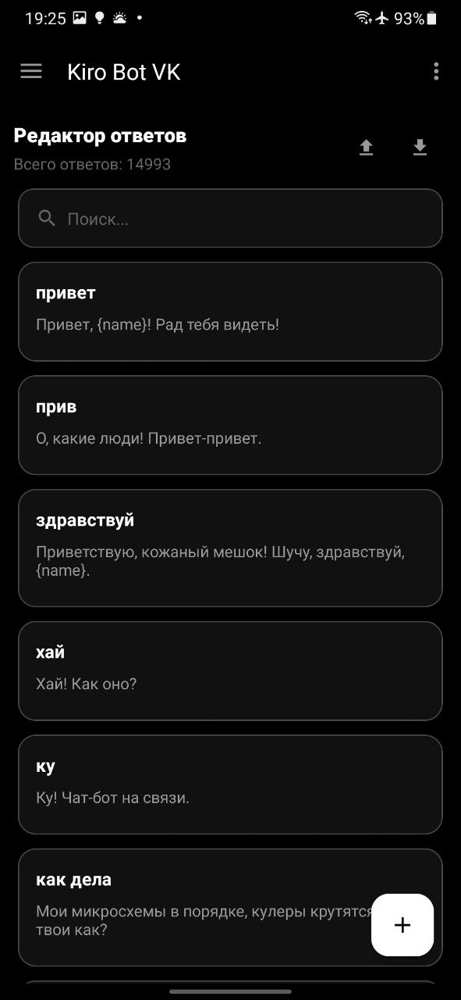
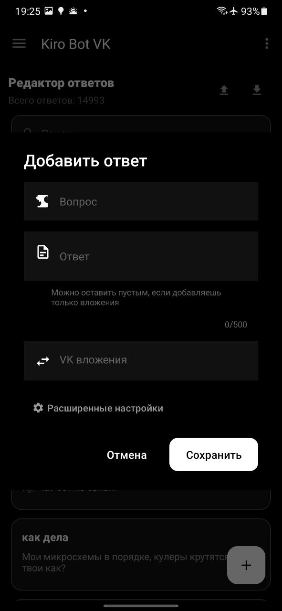
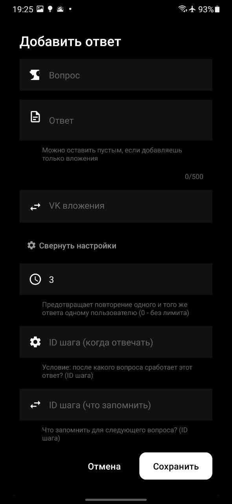
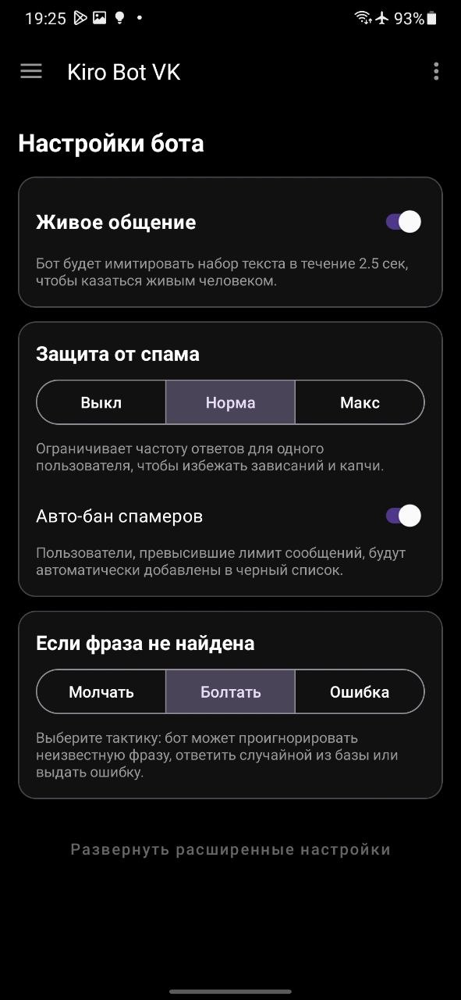
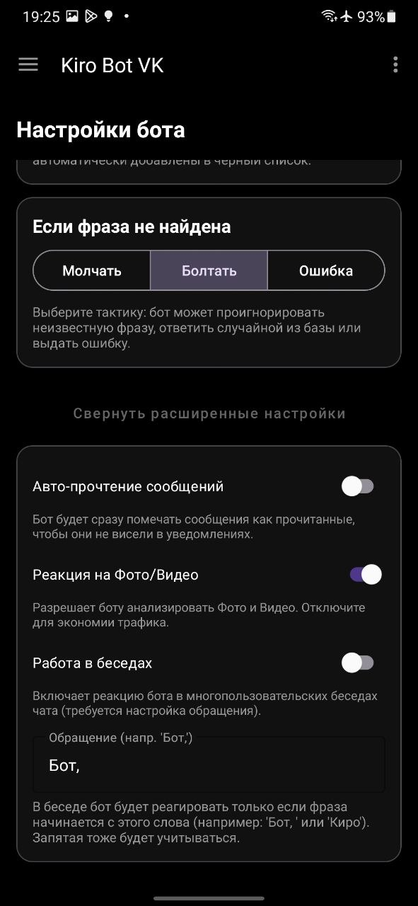

← Назад к разработкам

Kiro Bot
О разработке
Kiro Bot — это мощное решение для автоматизации общения в сообществах и профилях ВК. Благодаря продвинутому движку BotBrain 2.0, бот умеет не просто отвечать на вопросы, но и понимать контекст, работать с вложениями и обеспечивать безопасность вашего чата.
Ключевые возможности:
- 🧠 Интеллектуальный поиск (BotBrain v2.1.8): 6 уровней приоритета, Regex-выражения, Fuzzy Search (опечатки), точные совпадения, контекст и динамические переменные.
- 👥 Мультиаккаунтность: Одновременное управление до 5 ботами (как в сообществах ВК, так и в личных профилях).
- 📎 Вложения: Поддержка голосовых сообщений, фото, видео, документов и граффити с сценариями ответов.
- 🛡️ Защита: Встроенный черный список пользователей для предотвращения спама и троллинга.
- ⚙️ Управление: Удобный редактор правил, живой лог событий с подсветкой, детальная статистика и дизайн Material 3 с темной темой.
Скриншоты








